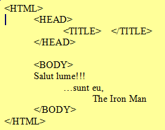
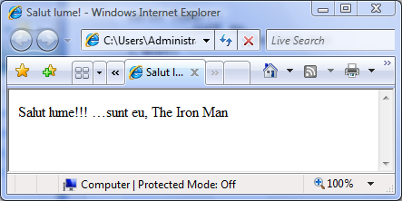
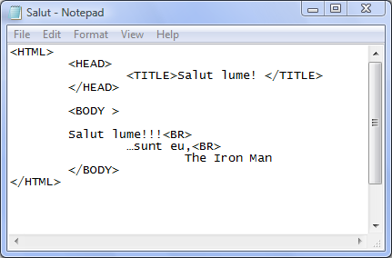
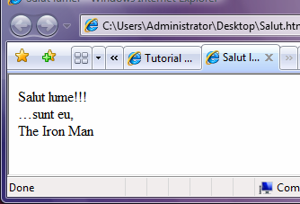

Sa presupunem ca in fisierul sursa am editat urmatorul cod, astfel incat browserul
sa afiseze salutul meu intregii omeniri. Editarea s-a facut trecand la rand nou cu
tasta Enter(CR/LF) iar alineatele utilizand tasta TAB.


Codul sursa HTML.................................................Afisare pagina web
Prin urmare browserul nu interpreteaza toate elementele editarii: nu recunoaste
trecerea la rand nou cu tasta Enter, nu recunoaste saltul generat de tasta TAB si nici
macar mai multe spatii succesive!
Problema fortarii trecerii la rand nou se rezolva cu ajutorul etichetei BR (prescurtare
de la BREAK), dupa cum se poate remarca din executarea codului urmator:


Codul sursa HTML.................................................
......................................................Afisare pagina web
Concluzia acestui examplu este ca intr-adevar browserul nu este capabil sa
interpreteze corect toate codurile generate in procesul de editare. Un mod de a rezolva
aceasta problema este folosirea de blocuri de text preformatat.
Inapoi la blocuri de text